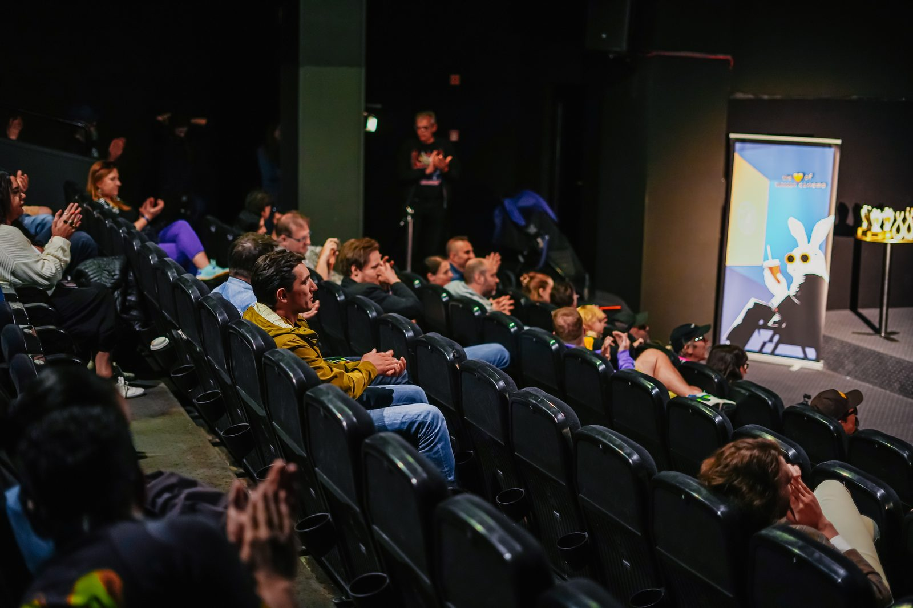

Powstał przy dwóch piwach. Pierre Corbin, zaprzyjaźniony filmowiec, był w Warszawie i chciał pokazać swój film, The Great Reset and the Rise of Bitcoin. Seans się nie odbył. Więc poszliśmy zamiast tego na piwo i zaczęliśmy gadać — i stało się oczywiste, że filmów bitcoinowych jest więcej niż jeden. Może powinniśmy zrobić wydarzenie, pokazać kilka z nich, wybrać najlepsze. Pierwsze odbyło się jako wydarzenie towarzyszące Weekend of Capitalism — 120 osób, osiem filmów, same dokumenty. Jakość była lepsza, niż ktokolwiek się spodziewał. Więc zrobiliśmy to znów.
Zrobiła się z tego społeczność. To jest prawdziwa zmiana. W pierwszym roku to był pomysł, który testowaliśmy. Teraz ludzie to kochają, wracają, przyprowadzają znajomych. Filmy też się zmieniły. Pierwszy rok to były same dokumenty — i dokument wciąż jest u nas najczęstszym gatunkiem — ale teraz jest fikcja AI, komedia, dramat. Co roku eksperymentujemy. Robiliśmy warsztaty samoobrony, warsztaty opowiadania historii, własne studio pitchowe, koncerty na żywo. Co roku przyjeżdża więcej artystów, którzy w ogóle nie są filmowcami — muzycy, malarze, fotografowie. To naprawdę festiwal kultury bitcoinowej, który akurat jest zbudowany wokół kina.
To najczęstsze pytanie, jakie dostajemy. A odpowiedź brzmi: to kategoria, jak filmy sportowe albo religijne. Większość naszych filmów jest wprost o Bitcoinie. Ale wiele to zwykłe filmy — romans, komedia, kryminał — w których Bitcoin jest po prostu ważną częścią fabuły. A potem są filmy, które nigdy nie wspominają o Bitcoinie i powstały na długo, zanim zaistniał, jak Matrix czy Truman Show, ale w swoich wartościach są filmami bitcoinowymi. Samorealizacja. Niezależność. Antysystemowe spojrzenie na świat. Nie wymyśliliśmy tej kategorii. Odkrywamy ją, kształtujemy — co roku.
Bo je kochamy i bo to najpotężniejsze medium dla wyobraźni. Filmem możesz informować, możesz motywować, możesz inspirować. Możesz opowiadać historie prawdziwe, historie fikcyjne i historie, które dopiero mają stać się prawdą. Bitcoin nie zostanie zaadoptowany tylko dlatego, że zbudujemy lepsze portfele, łatwiejsze portfele, czy nawet lepsze ramy prawne. Musi nastąpić zmiana kulturowa — w stronę wolności, niezależności, uczciwości, dobrowolnej współpracy. Nie naprawisz świata samą technologią. Musisz pracować nad kulturą równolegle.
Że problemy świata mają przyczynę u korzenia. Musimy walczyć z przyczyną, nie z objawami. Bitcoin FilmFest jest o ewolucji kulturowej, o znaczeniu bitcoinowej subkultury. Nie jest o inwestowaniu, nie jest o pieniądzach. Jest o rewolucji wolności.
Nie ma idealnego uczestnika. Witamy technologów, artystów, rodziny, zatwardziałych bitcoinerów, kompletnych początkujących — wszystkich. Co roku jakieś dziesięć procent sali to ludzie, którzy po prostu weszli z ciekawości, a wychodzą wiedząc, czym jest Bitcoin, dzięki nam. Festiwal jest dla ciebie, nawet jeśli myślisz, że nie jest. Nawet jeśli nie znasz Bitcoina i nie chcesz się go uczyć — poczujesz ten klimat. To festiwal o zdecentralizowanej kulturze bez pozwoleń, o wolności słowa, o wierności prawdzie.

Halving w 2024. Nikt nie wie dokładnie, kiedy wykopany zostanie blok halvingu — a stało się to dokładnie podczas naszego festiwalu, zaraz po tym, jak pokazaliśmy psychodeliczny, surrealistyczny film — Gods of Their Own Religion. Zrobił się z tego sylwester. Cała sala odliczająca razem do nowej ery Bitcoina. Wyświetliliśmy logo Bitcoina na Pałacu Kultury — dziesiątki tysięcy ludzi w Warszawie zobaczyło to na żywo, setki tysięcy w sieci. Relacja stała się wiralem. Takiego momentu nie da się zaplanować. Po prostu wpadł nam w ręce.
Warszawa jest w centrum Europy, łatwo dojechać, piękne i dynamiczne miasto z prawdziwą historią, w tym historią kina. A współpracujemy z Kinoteką, najlepszym kinem festiwalowym w Polsce, bardzo przyjaznym Bitcoinowi. A co do budynku — Pałac Kultury był kiedyś symbolem komunizmu, okupacji narzuconej Polsce po wojnie. A teraz, na kilka dni, zostaje zajęty przez najbardziej wolnościową, zdecentralizowaną kulturę, jaką można w nim umieścić. To dobra symbolika.
Żadne. Ludzie związani z Monero są naszymi gośćmi od lat. MoneroKon co roku podróżuje do innego miasta, a w tym roku to Warszawa, więc to złożyliśmy: te same daty, to samo miejsce, wspólne imprezy, jeden bilet wpuszcza na oba. MoneroKon nie jest tak naprawdę konferencją o Monero. Jest o dostępie do prywatnego, zdecentralizowanego pieniądza bez pozwoleń, a około połowa programu to Bitcoin. Jego publiczność jest może nawet bardziej napędzana ideami niż na innych konferencjach bitcoinowych. Samo Bitcoin FilmFest pozostaje wydarzeniem wyłącznie bitcoinowym. Koligacja jest o ludziach, którzy się pokrywają, nie o markach.
Realny zakład. Kino to jedna z branż, które AI przekształca najszybciej, a my chcemy mieć miejsce w tej rewolucji, nie widok z tyłu. Więc w tym roku prowadzimy warsztaty AI, na których uczestnicy tworzą krótkie filmy na miejscu, oraz konkurs AI „Future of Money" z pulą nagród 2,5 miliona satów, w którym głosuje publiczność. To eksperyment. Ale AI otwiera kreatywność. Pozwala ludziom, którzy nigdy wcześniej nie mogli zrobić filmu, zostać filmowcami. To warto potraktować poważnie.
Bo dosłownie to nas napędza. To dla nas projekt poboczny. Ledwo pokrywa koszty — robimy to z miłości do gry. Działa dzięki przyjaciołom, w Polsce i poza nią — mój współzałożyciel Pierre, nasz kluczowy zespół Kasia Szczypska, Selale Malkacoglu, Błażej Szkudlarek, Florina Mahalean i Nomishka Dilshan, i wolontariusze, którzy są prawdziwą siłą festiwalu. Jesteśmy wydarzeniem oddolnym. Bez stoisk, bez targów, bez wielkich firm wydobywczych. Niski budżet, świetny klimat. Zupełnie inne odczucie niż na ogromnych wydarzeniach. Nie chcemy przestać. Chcemy robić to dalej, rok po roku.
Przyjedź mimo wszystko. Filmy można obejrzeć online — mamy VOD — ale bitcoinerzy nie istnieją tylko przed ekranami. Jesteśmy siecią przyjaciół. Przyjedź do Warszawy i poczuj, że jesteś częścią czegoś, że nie jesteś sam. Filmy zrobią resztę.